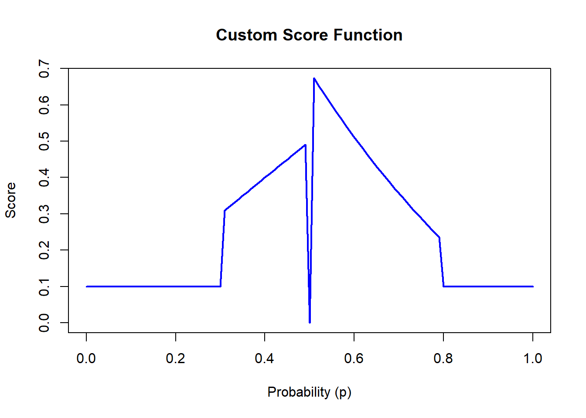

In machine learning and deep learning for classification, models are often evaluated based on metrics such as accuracy, F1-score, and others. This is for example done at paperswithcode. While these metrics are commonly used, in particular, due to how easy they are to understand, they have significant drawbacks, which will be explained in this blog post.
There are many StackExchange posts discussing why proper score functions are preferred over accuracy and related metrics, such as here. However, it being a proper score function is not sufficient for it to be a useful scoring rule, thus I will define other desirable properties of a score function.
Desireable properties of a score function
To better evaluate model performance, we need a class of score functions that meet certain desirable properties. Formally, we define a score function as follows:
Formally, we can define a class of score functions like this: Let \(\mathcal{P}\) be a class of probability distributions over the outcome space \(\Omega\). A score function \(S: \mathcal{P} \times \Omega \to \overline{\mathbb{R}}\) assigns an extended real-valued score to a pair \((P, y)\), where \(P \in \mathcal{P}\) is the forecasted probability distribution, and \(y \in \Omega\) is the observed outcome. I will assume that true probability distribution assigns a probability \(p^*\) to the observed outcome \(y\). I will throughout use the convention that a lower score is better.
What properties should such a score function possess?
Proper
A score function is said to be proper if it satisfies the following condition for all \(P, Q \in \mathcal{P}\):
where \(\mathbb{E}_{y \sim P}\) denotes the expectation with respect to \(P\). It is strictly proper if the equality equality holds only when \(Q = P\), i.e.,
\[
\mathbb{E}_{y \sim P}[S(Q, y)] > \mathbb{E}_{y \sim P}
[S(P, y)] \quad \text{for all } Q \neq P.
\]
While this property ensures that the score function is minimized when the forecasted distribution matches the true distribution, it alone is not sufficient to guarantee a good score function. For example, consider the following score function:
score_function <-function(p) {if (p ==0.5) { score <-0 } elseif (0.3< p & p <0.5) { score <- p } elseif (0.5< p & p <0.8) { score <-abs(log(p)) } else { score <-0.1 }return(score)}p_values <-seq(0, 1, by =0.01)scores <-sapply(p_values, score_function)plot(p_values, scores, type ="l", col ="blue", lwd =2,xlab ="Probability (p)", ylab ="Score",main ="Custom Score Function")

This is a strictly proper score function for the true distribution being \(Y \sim \text{bernoulli}(0.5)\), but clearly not a very good one. Thus, we need additional properties to ensure a more meaningful evaluation of predicted probabilities.
Monotonicity in Error Direction
I will call a score function \(S\)monotone in error direction if it penalizes predictions more heavily as they move further away from the true probability in a consistent direction. That is, it needs to satisfy 1. and 2. below:
Below the true probability: If \(P_1(y) \leq P_2(y) \leq p^*\), then:
\[
S(P_1, y) \leq S(P_2, y).
\]
Above the true probability: If \(p^* \leq P_1(y) \leq P_2(y)\), then:
\[
S(P_1, y) \leq S(P_2, y).
\]
The function is strictly monotone in error direction if equality holds only when \(P_1(y) = P_2(y)\). That is,
The above property can be strengthened by requiring it to be monotone in absolute distance to the true probability, which we now do.
Monotonicity in Errors
For score functions where the penalty depends only on the absolute distance from the true probability, we extend the monotonicity criterion as follows:
The function is monotone in errors if \[
S(P_1, y) \leq S(P_2, y)\quad \text{for}\quad
\lvert P_1(y) - p^* \rvert \leq \lvert P_2(y) - p^* \rvert.
\]
The function is strictly monotone in errors if equality holds only when \(\lvert P_1(y) - p^* \rvert = \lvert P_2(y) - p^* \rvert\), i.e.,
This ensures that predictions are penalized symmetrically for deviations both above and below the true probability, with the penalty increasing as the distance from the true probability grows.
Continuous
A score function should ideally be continuous, meaning small changes in the forecasted probabilities result in small changes in the score. This ensures that the score does not behave erratically or disproportionately penalize small prediction adjustments.
Examples
Here I will discuss a few example score functions and see if they satisfy the desirable properties described above.
Misclassification loss (Accuracy)
Definition
Accuracy in itself is even a scoring rule. It is common practice to use the \(\arg\max\) of predicted probabilities to turn it into a scoring rule by selecting the class with the highest predicted probability. This might not always be ideal though, see also Misclassification cost.
To define accuracy more formally, we first define the predicted class \(\hat{y}\) as:
where \(P(y | \mathbf{x})\) is the predicted probability for class \(y\), and \(\Omega\) is the set of all possible classes.
To turn this into a scoring rule where lower scores are better we assign a score of 0 when the predicted class matches the true class, and a score of 1 otherwise. Formally, this can be written as:
\[
S(P, y) = \mathbb{I}(\hat{y} \neq y),
\]
where \(\mathbb{I}(\cdot)\) is the indicator function, \(\hat{y}\) is the predicted class, and \(y\) is the true class. I will refer to this as the misclassification loss.
Properties
Misclassification loss is
Proper but not strictly proper,
Monotone in errors but not strictly monotone in errors,
Not continuous.
So, misclassification loss actually has most of the desirable properties (just not strictly), however there is another big one it doesn’t take into account, which is misclassification cost.
Misclassification cost
The misclassification cost takes into account not just whether a prediction is correct or incorrect, but also the severity or cost associated with different types of errors. In some contexts, certain types of misclassifications are more costly than others. For instance, in medical diagnoses, a false negative (failing to identify a disease) might be more costly than a false positive (incorrectly diagnosing a disease).
Misclassification loss thus assumes the costs are the same for all misclassifications, and any version related to accuracy such as \(F_1\)-score, \(\dots\) also assumes a specific cost, which might be hard to agree on the true costs.
Thus, a fair evaluation of performance should not be based on accuracy or related metrics such as \(F_1\)-score, but instead on the actual probabilities.
Brier Score
Definition
Brier score is defined as \[
S(q,y)=-\sum_{k} (q_k-y_k)^2,
\]
where \(q_k\) is the predicted probability of class \(k\) and \(y\) is the true class.
Properties
Brier Score is
Strictly proper. Can be shown by computing the 2nd derivative and showing it is negative, see for example here,
Strictly monotone in errors,
Follows from proof of strictly proper.
Continuous.
Clearly is.
We thus see that the Brier score satisfies all the desirable properties (and strictly so!).
Log-loss (cross-entropy)
Definition
Log-loss is defined as \[S(q,y)=-\sum_k y_k\log(q_k),\] where \(q_k\) is the predicted probability of class \(k\) and \(y\) is the true class. ### Properties
Log-loss is
Strictly proper. A proof can again be made by computing the 2nd derivative and showing it is negative, see for example here,
Strictly monotone in error direction,
Follows from the proof of strictly proper.
Log-loss is not monotone in errors, since if true probability is \(0.1\) then guessing probability \(0\) gives a score of \(\infty\), while score of \(0.8\) is finite.
Continuous.
Clearly is.
We thus see that the Brier score satisfies all the desirable properties (and strictly so!), except the symmetry condition in monotonicity in errors.
Conclusion
When comparing models, it is crucial to use metrics that accurately reflect performance and align with the goals of the analysis. Accuracy and related metrics, while intuitive and widely used, have significant limitations, particularly in scenarios where the predicted probabilities themselves carry valuable information.
Proper score functions that also satisfy the desirable properties defined in this blog—such as the Brier score and log-loss—offer a more robust and nuanced evaluation of model performance. These metrics reward accurate probability forecasts and penalize deviations in a principled and meaningful way.